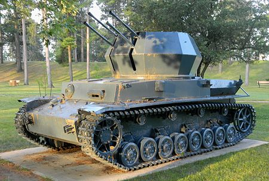

Wirbelwind
 Flakpanzer IV "Wirbelwind" (Whirlwind in English) was a German self-propelled anti-aircraft gun based on the Panzer IV tank. It was developed in 1944 as a successor to the earlier Möbelwagen self-propelled anti-aircraft gun.
In the first years of World War II, the German military forces had less interest in developing self-propelled anti-aircraft guns, but as the Allies began to gain air superiority, the need for more mobile and better-armed self-propelled anti-aircraft guns increased. During the early summer of 1944, Hauptsturmführer Karl Wilhelm Krause with the 12th SS Panzer Division came up with the concept of the Flakpanzer IV Wirbelwind.